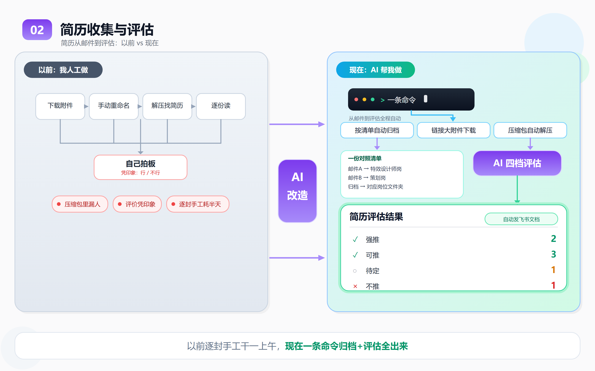
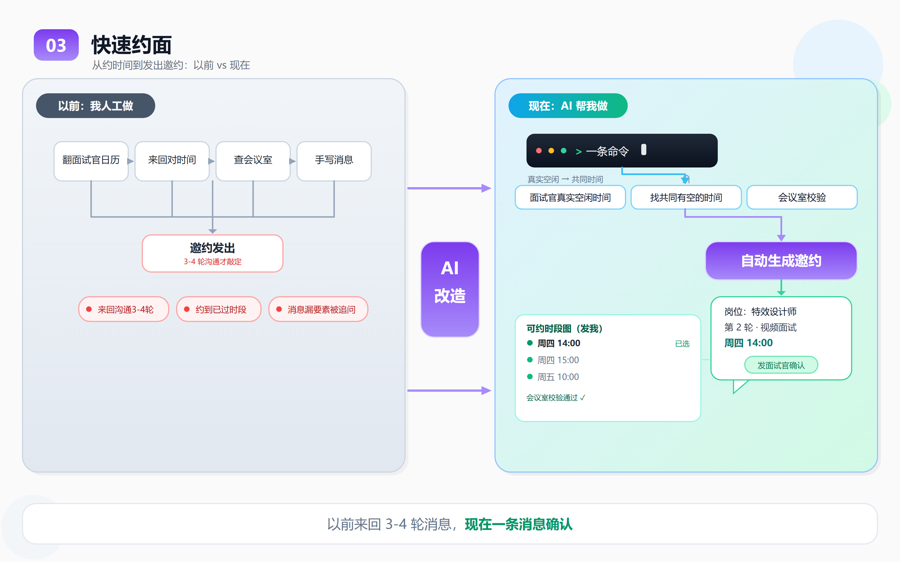
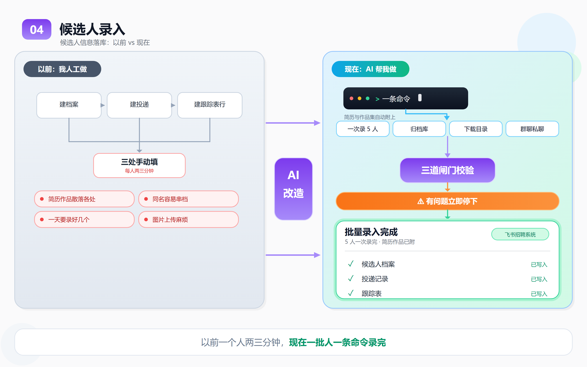
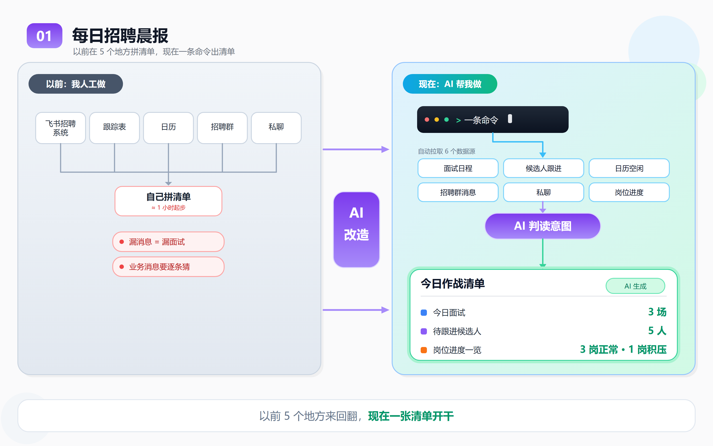
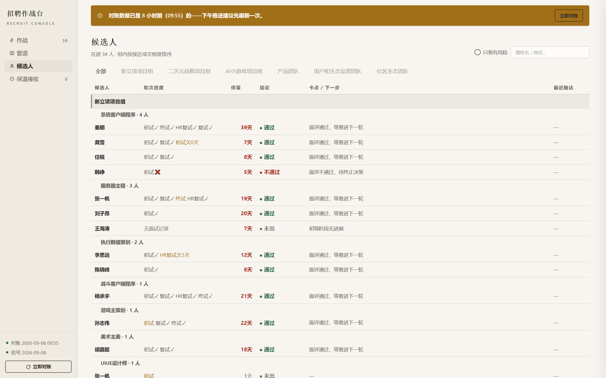
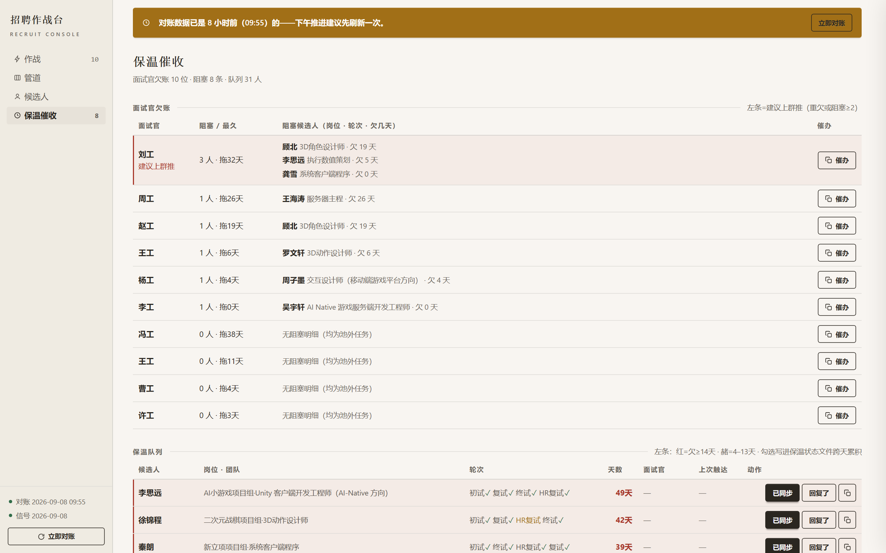

WORK · 01
AI 招聘工作流
招聘里每天重复的环节，一条条交给 AI——规则交给脚本，判断留给人。
实习期间，我的日常散在五个信息渠道里：简历邮箱、招聘系统、日历、群消息、表格。重复动作多到挤压了真正需要判断的时间——于是我把每个环节逐步改造成「AI 做，我复核」。
核心判断
AI 出初筛报告，面不面由人决定。
AI 负责把信息收齐、按统一的尺度给出初判；人负责最终的面对面判断。为了让 AI 的初判"有谱"，我先把每个岗位的评估尺度写成文档，再用真实面评持续校准它。
招聘全流程九环节，三段推进。朱砂标记的四个环节，加上覆盖全链的晨报与录入，是我 AI 改造的落点。
collect
简历归档脱敏
邮箱附件自动下载、按岗归档、脱敏重命名，生成待评清单。
省掉：逐封下载附件
analyze
四维初筛
方向 · 硬卡 · 含金量 · 风险，每份简历出一份结构化初判。
省掉：凭印象判断
schedule
约面档期匹配
读面试官日历与会议室，比对候选人窗口，产出可转发草稿。
省掉：三四轮消息对时间
entry
批量录入
候选人批量录入招聘系统，三道校验防止错岗、重录。
省掉：每份两三分钟手录
初筛要"有谱"，前提是评估尺度先于 AI 存在。我和业务把每个岗位的标准对齐成文档——27 份《岗位评估要点》，覆盖美术、程序、策划、运营、产品五类岗位，每份回答五层问题：
真实看重什么
WEIGHTS
- 按业务权重排序，而非 JD 原文照抄
- 例：客户端岗"网络同步理解"权重第一
硬卡项
HARD GATES
- 不满足直接不推：年限、引擎、完整项目经验
- 宁缺毋滥，不与业务讨价还价
可放宽项
FLEXIBLE
- 品类、工具链、加分项，明确写出来
- 防止把好候选人误杀在边界上
雷区
RED FLAGS
- 来自被拒面评的真实死因
- 例："只调参数没做过完整战斗系统"
秒推信号
FAST PASS
- 看到就直接约面的组合特征
- 业务口头认可的画像完整命中
以一份客户端岗位要点为例（已脱敏）：27 份要点全部与业务对齐后定稿，且面评持续回灌——尺度不是一次写成的。
尺度怎么校准：一次"整批被拒"的复盘
8 月初，一个客户端岗位连推 5 人，被业务整批拒掉，理由都是"经验不足"。整批被拒通常不是候选人的问题，是尺子的问题。我把几场被拒面评横向摆在一起，发现他们挂在同一个点：讲不清两种网络同步方案的选型取舍——而业务在口头沟通里恰好点过这个方向。
跨人一致 = 真实门槛，不是个人口味。当天把这条回灌进评估要点：简历讲不出同步项目落地细节的，简历关直接不推。33 条这样的面评反哺，让评估尺度越用越准。
三项全中——方向对口、硬卡全过、命中秒推信号；且过三道关：角色匹配、业务敢用、团队接得住。
硬卡全过、方向对口，但有 1–2 个待验证点——报告里写明"面试要问什么"，把问题前置给面试官。
关键信息冲突或缺失（如年限对不上），先补信息再判定，不硬猜。
命中雷区或硬卡不过——写明死于哪一条，结论可追溯、可复盘。
纯图片简历 / 只有作品集，无法文本评估——转人工看原件，不强行打分。
43
个在招岗位，全流程走这套 AI 工作流
27
份《岗位评估要点》，与业务逐一对齐
33
条真实面评反哺，持续校准尺度
16
个 skill 全部开源：GitHub ↗
22:30
每晚自动汇总当日进展，生成次日晨报
改造前后，同一件事的两种做法（左：改造前 → 右：现在）。截图均为实习期间真实工作界面，点击可放大：




WORK · 02
人才 Mapping：AI UGC 游戏方向
这类岗位高校没有对口专业，等简历等不到——我把招聘从「被动收简历」改成「主动找人」。
公司海外 AI UGC 平台方向的人才需求，挂在招聘渠道上两周，像样的简历寥寥无几。这类岗位在高校没有对口专业，从业者散落在少数几家公司的特定团队里——等，是等不到的。
核心判断
找不到人，先别怪渠道——先把"人在哪、凭什么动"研究清楚。
我用研究市场的方法做人才 Mapping：从行业格局到岗位能力模型，再到具体的人怎么流动，最后才谈寻访策略。
认识市场
先搞清 UGC 平台的生意本质：创作者生态怎么转、钱从哪来、头部壁垒是什么。
发现：人才高度集中——头部三家占 75% 以上，Mapping 的靶子其实很窄。认识岗位
把笼统的「UGC 策划」拆成四类岗位，逐一与业务纠正能力模型。
发现：同一个 title 下，不同团队要的完全是不同的人——不拆开，寻访就是盲人摸象。认识人
盘点核心人才存量与流动规律：谁手里有这些人、他们什么时候会动。
发现：全国核心人才不足 50 人；大厂用薪酬溢价和内部转岗锁人，主动跳槽少，外流窗口集中在项目关停期。怎么招
基于存量与窗口，制定编制策略与触达优先级。
结论：挖猎竞品核心 30% / 跨界转化 40% / 校招与内培 20% / 生态借力 10%。同一个 title，不是同一批人
最早照着「UGC 策划」一个画像寻访，推过去的简历，业务总说不对路。把这批岗位拆开重看才发现：同一个 title 下，不同团队要的完全是不同的人。
逐个团队重新对齐能力模型之后，寻访才有了准星。这轮研究给我最大的纠正：Mapping 的第二步是和业务重新对齐岗位，而不是照着 title 找人。
44
人定向触达并推进进入招聘流程
7
人拿到 Offer
※ 本页只呈现公开市场数据与方法论；报告中涉及具体人员信息的部分不对外展示。
WORK · 03
招聘作战台
为自己搭的本地看板——开工 30 秒，知道今天该干什么。
招聘进度散在三处：系统、表格、聊天记录。每天早上要先花十几二十分钟拼出全貌，才能开始干活——而且拼出来的版本，和系统里的真相未必一致。
核心判断
看板只读，不写回。
面试、候选人、待办，三份结构化数据源只被读取、不被修改。本地 Node 运行，双击启动。

按时段分组：上午 / 下午 / 傍晚——不是列表思维，是"我的一天"思维，到场节奏一眼可判。
重点场高亮：复试及以上自动标注——精力分配跟着决策权重走，而不是按时间先后。
异常与风险栏：待终止确认、拒绝信号、欠面评、评估挂起——把"会忘掉的事"变成"必须处理的事"。
对账提醒：数据快照超时就提示先对账——看板可以旧，但不能假装是新的。



这是我个人每天用的工作台，不是公司系统——它解决的是「我的每一个早上」。